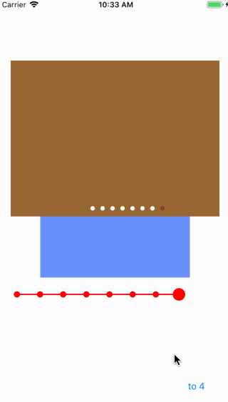
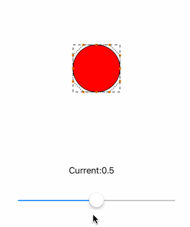
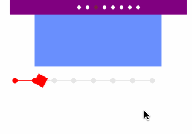

####写在开篇
本篇文章我准备把它作为我研究动画系列的开篇，我之前关注了KittenYang大神的动画系列，但是因为工作中并没有用到这些动画也没有深入研究，现在重新捡起来，本篇是对KittenYang的KYAnimatedPageContol项目在Swift4.2版本的一个复刻，下面是复盘的整个过程（相信我，动起手来并不简单）
####最终效果
在实现一个动画效果时候，动画并不是凭空想象而来的，可以计、画线稿、有个交互过程，由于已经有现成的了，直接看最终效果

拆解
抛开循环，初看这个效果，直观的感受就是小球发生了形变。所以一个可行的做法是：用四条贝塞尔曲线拼出这个小球的形状，然后只需单独控制每条贝塞尔曲线的形状就能实现小区的形变。具体这部分内容我也不想说了，下面录了一个效果图

若要看具体代码和实现原理我已经放到参考链接 –> 小球的形变示例
复盘细节
######滑动时滚动圆
1 . 如何在滑动让圆发生形变
1.1 滑动的方向
判断scrollView 移动的距离 减去 上次滑动的距离 是否小于scrollView距离的一半，则为向左滑动，反之向右
1.2 计算相对圆的矩形坐标点
1 | scrollView.contentOffset.x / CGFloat(scrollView.frame.size.width) * CGFloat(((pgctl.frame.size.width - pgctl.ballDiameter * 2) / CGFloat((pgctl.pageCount - 1)))) |
这句代码是我用来计算矩形X的坐标点的代码，解释 –> 移动的距离 / scrollView的宽度 * （pgctl的宽度 - 圆的半径 * 2）/ pgctl.pageCount - 1 ,这部分代码的意思 scrollView滑动的距离相比pgctl ，其中圆应该每次移动的距离；其中 减去圆的半径 * 2 这部分很重要，减去圆的直径后续会保证圆和小圆的中心点一致
1.3 计算是否越界 （伪代码）
1 | if originX - self.indicatorSize / 2 <= 0 { |
1.4 重绘
重绘代码就是调用刚才小球形变里面的代码2 . 滑动结束后弹性动画
2.1 弹性动画
动画调用 KSpringLayerAnimation 里面的弹性动画
在swift里面给CALayer添加关键帧动画时必须重写 needsDisplayforkey方法
2.2 needsDisplayforkey
1 | override class func needsDisplay(forKey key: String) -> Bool { |
factor 是形变圆D 或B点移动的距离 必须要监控的factor的值变化动画才能运动起来，在swift里需要给factor添加关键字@NSManaged才可以，这就是为什么重写needsDisplayforkey
2.3 动画结束
动画结束后要移除动画，removeAllAnimations，移除动画后会再次调用setNeedsDisplay方法，所以必须把factor也置为0，否则圆就会不规则。原版 issues里有提到这个问题，factor置为0即可
#####滑动时滚动线和pgctl点
计算滑动时 pgctl应该移动的距离即可，有需要注意的是当移动的距离大于pgctl点的时候再把颜色改成选中的颜色，具体查看代码
#####方型样式
方型样式稍微简单一些，效果示例

只需要做动画变换就可以了
1 | var transform = CGAffineTransform.identity |
####我是如何无限循环和自动循环
这是原版的issues问题，我拿来尝试实现了，原理：在循环的动画结束后，调用setContentOffset（animated：）方法，这时候会圆自动重绘，然后延迟执行弹性动画即可，值得注意的细节就是延长调用线的动画执行时间 就会有个线跟随球效果，这样就实现了一开篇的效果，代码在下面
####总结
花了好几天时间，出乎意料的难，看原版和博客感觉很容易，当我动手时，发现好多细节参数都需要自己仔细的调，梳理逻辑，并不是原封不动的翻译成Swift就行，需要仔细理解每句代码，加减的距离是什么，为什么要这样做，为什么要重写那些方法等等，对应了解决了原版的一些issues，源码我放到github上，链接放到参考目录里了，这篇博客是仓促写的，但是大致的脉络，怎么运动和变化、关键步骤都有说明，想要完全理解可以和代码一一对照，每一个好的动画都需要耐心，欢迎勘误。
参考目录
本篇动画效果源码
小球的形变示例
KYAnimatedPageControl
__END__

文章出处：A Guide To iOS Animation （一）AnimatedPageControl
作者签名：所有伟大的事情都源于梦想，始于微不足道.
关于主题：Hexo - Live For Code
版权声明：文章除特别声明外，均采用 BY-NC-SA 许可协议，转载请注明出处